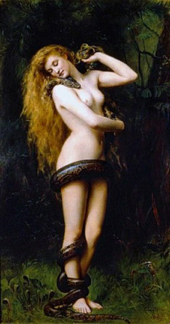
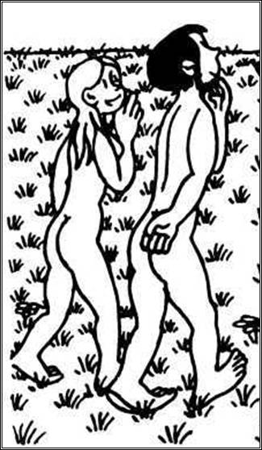

| 
| Джон Кольер "Лилит" (1887)
|
I. Пролог. Встреча с Лилит
Среди ночи очнулся во тьме,
Обожгло меня странное чувство,
Прежний мир растворился во сне,
Ну а новый возник из безумства.
Я пытался ту ночь превозмочь,
Мысли вихрем кружили по кругу,
Страхи гнали мой разум прочь,
Остриями пронзая мне душу.
Силуэт в полумраке возник,
Женский лик, или сна продолженье:
- Я Богиня распутства Лилит,
Зачем звал меня в час пробужденья?
- Не тебя, поди прочь от меня,
О другой тосковал до рассвета,
Звал я Еву, любовью горя,
Песня страсти моя не допета.
- Ждал напрасно, она не пришла,
Догорели зажженные свечи,
Не ее, а себя лишь виня,
Я любовь потерял в этот вечер.
- Евы имя мой вечный рок,
Снова ранит в самое сердце,
Думал ты, полюбить деву смог,
А она с другим теперь вместе.
- Я уверен, мне Ева верна,
Плед возьми и скорее накройся,
Дико страстна твоя нагота,
Чем доводишь меня до расстройства.
- Милый мой, не страшна нагота,
Мне смешнее одетой являться,
Не на грудь ты смотри, мне в глаза,
Хоть сейчас я готова отдаться!
- Ты любви звезда, что с неба сошла,
Но не будем спешить целоваться,
Подождем, что нам скажет судьба,
И поможет во всем разобраться.
- О, вечный спор меж Евой и мной,
Мы снова стоим на распутье,
Влюбиться девчонке не сложно порой,
Но как же прожить без распутства?
II. Сотворение Адама и Лилит
Луч солнца в комнату проник,
Ночные призраки исчезли,
Не вижу больше я Лилит,
Лежу один в своей постели.
Ночи воспоминания свежи,
Ищу "Лилит" я в интернете,
Нашел закладки, что важны,
И вот что я прочел в Завете:
"На день шестой Бог тварей породил,
На Землю их плодиться отпустил,
В седьмой же день стал глину мять,
Лилит с Адамом создавать.
И в образе подобном своему,
Оставил жить поблизости, в раю".
А дальше много версий есть,
В поэме всех не перечесть.
*
Родив людей, в восторг впал Бог:
- Воистину творения прекрасны!
В Эдеме пусть гуляют без забот,
Не дам я им до яблочек добраться!
- Труда не знайте, вам даю завет,
И счастием в Эдеме наслаждайтесь,
Адам, ты за жену несешь ответ,
Лилит, отныне мужу подчиняйся!
III. Жизнь Адама и Лилит в раю
О, райские кущи и чудеса!
Эдемом Адам восхищался,
Цветы и птицы, поля и леса,
Величью Творца поражался.
Но вскоре покой ушел навсегда,
Тянуло к Лилит дикой страстью,
Повсюду искал ее дотемна,
Страдал без взаимного счастья.
Вот как-то встретил ее у ручья,
И за руку взять попытался,
- Лилит, я жить не могу без тебя,
Ответной любви не дождался.
С досадой к Богу свой взор обратил:
- Жену обещал, а кого породил?
Ни разу не приласкала меня,
Такая подруга мне не нужна!
Лилит Господь к себе подозвал:
- Тебя для мужа я создавал,
К нему покорство скорей прояви,
Упрямством глупым меня не гневи!
Лилит к Адаму вернулась домой,
Его распалив своей наготой.
Решил, что теперь покорна она,
Хотел насладиться любовью сполна.
- Тобой наполнены ночи и дни,
Отныне моя ты навечно,
Как лучше лечь скорее скажи,
Любовь к тебе бесконечна!
- Не лягу я под тебя никогда!
Адам, наверху мое место.
- Господь назначил главным меня,
Не ждал от тебя я протеста.
- Ты символ Земли, я же Небес,
Лилит, лежать будешь снизу.
- Один мы с тобой из глины замес,
Твои не исполню капризы.
- Творцом рождена я равной тебе,
Коль сверху тебе непригодна,
Я покорюсь не тебе, а судьбе,
Прощай навсегда, я свободна!
И тайное имя Бога сказав,
Ночной улетела кометой,
Адам, от споров с женою устав,
Без чувств пролежал до рассвета.
IV. Создание Евы
Адам Лилит по раю искал,
Творца умоляя в надежде,
Под вечер от поисков сильно устал,
Но ждал возвращенья, как прежде.
За краем Эдема пустыня лежит,
Вдруг смех услыхал безумолку,
Туда посмотрел и видит Лилит,
Вдвоем с Сатаной на проселке.
От ревности ум потерял Адам,
Эдем уж не кажется раем,
Не верит больше словам и мечтам,
Обидой и гневом сжигаем.
В беде Адама не бросил Господь,
В сон крепкий поверг бедолагу,
Достал ребро, скроил затем плоть:
- Вот Ева тебе для услады!
- Не огненно-страстна, но хороша,
И, главное, мужу покорна,
Недаром я сделал ее из ребра,
Работа моя превосходна!
Ласкалась кошкой к Адаму она,
Кудрями себя прикрывая,
В постели была проста и скромна,
Супругу во всем потакая.
Вторая жена Адама пленит,
Но только глаза он закроет,
В мечтаниях видит снова Лилит,
По первой любви душа ноет.
Рыжие волосы в руки берет,
Взгляд прежний его чарует,
Все ночи грезит о ней напролет,
Но Еву, что рядом, целует.
Та, что доступна, манит порой,
В любви же "загадка" желанна,
Легко Адаму с новой женой,
Но тянет к Лилит постоянно.
V. Свидание с Евой
Город укутался в темень ночи,
Затих в лабиринте огней,
Как в этом мраке не сбиться с пути,
Дорогу найти что верней?
Вот третий день телефон молчит,
Ответа как манны я жду,
Вдруг голос Евы в трубке звучит,
- Мой милый, к тебе я иду.
В квартире моей появилась она,
Вошла звездой безупречной,
- Как мог я, Ева, жить без тебя?
Останься со мною навечно!
- Зачем так спешить, мой дорогой,
Не надо меня раздевать,
Конечно, я буду навеки с тобой,
Но лечь не готова в кровать.
- Все говорят, до свадьбы ни-ни,
А вдруг передумаешь ты?
Много вокруг обмана и лжи,
Ты верность свою докажи!
- За те три дня, что я не была,
Другая могла ведь прийти,
И, может, она тебе тоже мила,
И мог с ней роман завести?
- Ты Ева права, но то был сон,
Богиню любви повстречал,
Поверь, в нее совсем не влюблен,
Все дни о тебе лишь мечтал.
- Другая все же была у тебя,
Ах, как могла верить тебе!
Ты зря в кино целовал меня,
Богиню любил ты во сне!
Ушла, надеждой не окрылив,
И в комнату сумрак проник,
Взаимную страсть не утолив,
Попали мы с Евой в тупик.
VI. Изгнание Адама и Евы из рая
В любви Сатана покоя не знал,
Смотрел на Лилит во все очи,
И равным Творцу себя почитал,
Гоняясь за ней дни и ночи.
В аду же давно стояли котлы,
И черти вокруг наготове,
Но люди еще не познали вины,
Греха не родились каноны.
- Смотри, Лилит, говорил Сатана,
Адаму в раю с женой сладко,
Но Ева совсем тебе не ровня,
Распутство ей не подвластно.
- Змием коварным проникни ты в рай,
На древе познанья ее ожидай,
Ева яблоко скушает лишь,
И сразу мужа ты возвратишь.
Лилит Сатаны выполняет совет,
Ева согласна и яблоко ест,
А дальше все не по плану идет,
Адам в руки яблоко тоже берет.
Кусок откусил, и стало темно,
Еще кусочек, и знанье пришло,
Стыд появился, Адам покраснел,
Добро и зло во вселенной узрел.
Шум услыхав, Бог с неба сошел,
Ужасен в гневе и страшно зол,
Сразу в Змие Лилит он признал,
Навеки людей из рая изгнал.
VII. После изгнания из рая
Познали люди добро и зло,
И пищу с трудом искали,
Создали науки и ремесло,
И в болях детей рожали.
Ева всегда добра и мила,
Адаму верно служила,
Всем для него была хороша,
О рае не сильно тужила.
Адам же часто Лилит вспоминал,
Хоть с Евой любви предавался,
Во сне к себе ее прижимал,
Наутро же сон забывался.
Лилит готова прощенья просить,
Неслышной тенью ходила,
Мечтала снова любовь возродить,
За Евой с Адамом следила.
Только во сне влюблен был Адам,
Днем видеть ее не решался,
Не мог простить с Сатаною обман,
И с Евой своей обнимался.
Бог сам удивлялся, что натворил,
Прошли семь веков как мгновенье,
И вот, наконец, "грехи отпустил":
Не дал он Адаму бессмертья.
В час, что назначен, ушли к праотцам,
Сначала Адам, за ним Ева,
Но для Лилит путь закрыт к небесам,
Распутства она Королева.
Меж раем и адом помещена,,
Влюбленных пока не разлучит,
Адама и Еву, и лишь тогда,
Прощенье от Бога получит.
Должна Лилит судьбу изменить,
Адама влюбить в себя снова,
А как же Ева, с ней-то как быть?
О том расскажем мы скоро.
VIII. Второе свидание с Евой
- Ах, милый, я была неправа,
Мне Ева шептала украдкой,
- Готова любить тебя я всегда,
И жизнь наша будет сладкой.
- Я верил тебе и знал, что придешь,
В разлуке мы были недолго,
Тоска в груди, когда долго ждешь,
Довольно ходить в недотрогах!
Губы и руки друг друга нашли
Блузка к ногам упала,
- Адам, мне нужно домой идти,
Быть в десять - я обещала.
Дверной проем как черный квадрат,
Смущенный взгляд на прощанье,
- А я, наивный, был тебе рад,
Как странно наше свиданье!
IX. Новая встреча с Лилит
Один я снова в квартире своей,
Вдруг в комнате свет появился,
Рука Лилит в ладони моей,
И образ знакомый явился.
- Миф обо мне теперь ты узнал,
Я в рай могу возвратиться,
Господь прощенье мне обещал,
Но должен в меня ты влюбиться.
- Адам, одну лишь ночь я прошу,
Днем возвратишься ты к Еве,
Иначе снова в ад попаду,
А мне в Эдеме милее.
- Трудно, Лилит, тебе отказать,
Огнем ты пылаешь от страсти,
Но Еве как потом доказать,
Что сны - это вовсе не басни!
- Верь, не бывает счастья навек,
Мы счастливы лишь на мгновенье,
Чувствам своим поверь, человек,
Ведь жаждешь со мной ты общенья!
- Лилит, меня ты сводишь с ума,
Мне трудно меж двух состязаться,
По-прежнему Ева мне дорога,
Но тянет любовью заняться!
От поцелуя Лилит Адам,
Без чувств упал на постели,
Что дальше, плохо помнил и сам,
Лишь губы его пламенели.
Одни говорят - в любви утонул,
Другие - был целомудрен,
В распутства бездну он заглянул?
Иль оставался зануден?
X. Эпилог
Поэмы финал вас удивил,
Неясно, что стало с героем,
Порыв любви его вдохновил,
А может он стал изгоем?
Зачем так много страниц писать,
Когда непонятна концовка,
Будет ли Ева его вдохновлять,
Иль дикая страсть, что свободна?
На перепутье каждый стоял,
Но дальше идти было страшно,
Господь Адама из рая изгнал,
Лилит же сбежала изящно.
А тени? Без них жить нельзя,
Но всех они вечно пугают,
А если у тени своя стезя,
Без нас она погибает.
Если мужчина - решенье прими,
Иди, и за правду сражайся,
А надо будет, судьбу измени,
И страстью своей наслаждайся.
Бедный Адам метался меж жен,
Во сне к Лилит его тянет,
Казалось ему, что он уж влюблен,
Но Еву опять обнимает.
Вы спросите, что же стало с Лилит,
В раю живет иль как прежде?
История наша об этом молчит,
Но встретить ее есть надежда.
Папы и мамы, рожайте детей,
Но чтоб не наделать ошибок,
Адамом не надо звать сыновей,
А Евами - прочих детишек.
| 
| Жан Эффель
Адам и Ева из сборника "Сотворение мира"
|